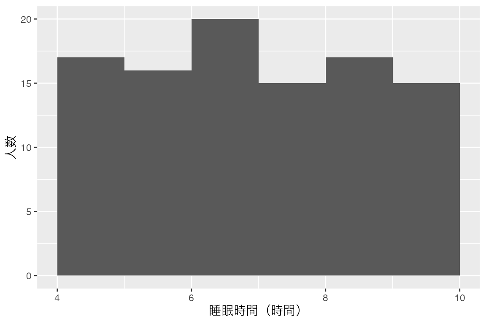

# 架空の100人分の睡眠時間を作る
set.seed(123)
sleep_data <- data.frame(
sleep_hours = round(stats::runif(n = 100, min = 4, max = 10), digits = 1)
)
# 人数、最小値・最大値、平均を表示する
nrow(sleep_data)
range(sleep_data$sleep_hours)
mean(sleep_data$sleep_hours)
# ggplot2で、区間の境界と軸ラベルを指定してヒストグラムを描く
sleep_plot <- ggplot2::ggplot(sleep_data, ggplot2::aes(x = sleep_hours)) +
ggplot2::geom_histogram(breaks = seq(4, 10, by = 1), closed = "right") +
ggplot2::labs(x = "睡眠時間（時間）", y = "人数")
print(sleep_plot)生成AIと統計プログラミング
生成AIにRコードの作成・説明・修正を依頼し、自分で実行して結果を確かめる方法を練習します。
1 目的
Rで統計分析を行うには、分析の目的に合わせて、データの読み込みや集計、作図などの処理をコードで記述します。従来は、分析者が関数の使い方を調べながら自分でコードを入力し、実行結果を見て修正するのが基本でした。生成AIを使うと、このコードの作成や修正を、AIとの対話を通じて進められます。行いたい統計分析を文章で説明してコードを作ってもらい、実行した結果やエラーを伝えて修正を依頼する、という流れです。
このページでは、AIとの対話を通じて統計分析のコードを作り、自分で実行して結果を確かめる方法を学びます。分析の目的と条件を伝え、生成されたRコードを実行し、処理の意味やエラーの原因について質問してみましょう。
題材は、大学生100人の睡眠時間を想定した架空データの生成と集計です。第9節（練習問題）まで取り組み、AIに依頼する → 自分で実行する → 結果を確かめる → 必要なら修正を頼むという流れを練習します。
2 準備
RとPositronのセットアップを終えていることを前提とします。授業用フォルダをPositronで開き、今回のコードを保存する generative-ai.R を作成してください。操作を確認したい場合は、セットアップのRの動かし方を参照します。作図にはセットアップで導入した ggplot2 を使います。
ブラウザで、普段使っている生成AIや、利用できる生成AIを開いてください。例えばChatGPTや大学契約のMicrosoft Copilotなどがあります。これらに限定する必要はありません。大学契約のサービスを使う場合は、大学の案内に従ってアクセスします。
AIに伝える情報
この授業では、データそのものをAIに渡さず、変数名・型・値の範囲と、行いたい処理を伝えます。今回の架空データでも、この手順で練習します。AIにはデータを生成するコードを書いてもらい、データは自分のパソコンのRで作ります。
コードの修正や結果の説明を求めるときは、必要なコードや集計結果を伝えます。データの全行を貼ったり、データファイルをアップロードしたりする必要はありません。実データを扱う場合は、集計結果にも少人数の情報が含まれることがあるため、送信してよい範囲を課題の指示で確認してください。エラー文に含まれるユーザー名や個人のファイルの場所も伏せます。
3 分析の仕様を言葉にする
今回は、架空の100人について睡眠時間の平均を計算し、どの時間帯に何人いるかをヒストグラムで見ます。AIに頼む前に、作るデータと欲しい出力を決めておきましょう。処理の条件を具体的に書いたものを、ここでは仕様と呼びます。
| 項目 | 今回の仕様 |
|---|---|
| 対象 | 大学生を想定した架空の100人。1行を1人とする |
| データの保存先 | sleep_data というデータフレーム（行と列からなる表） |
| 変数 | sleep_hours。1日の睡眠時間を時間単位で表す数値。欠損値は含めない |
| 値の範囲と桁数 | 4〜10時間の範囲、小数第1位まで |
| 生成方法 | 4〜10の一様分布から100個の乱数を生成し、小数第1位まで丸める |
| 再現のための設定 | 乱数を生成する直前に set.seed(123) を実行する |
| 数値の出力 | 人数、最小値、最大値、平均 |
| 図 | 横軸は睡眠時間、縦軸は人数。4、5、6、7、8、9、10時間を境界とするヒストグラム |
乱数とは、決めた規則に沿ってランダムに生成する値です。一様分布では、同じ幅の区間なら値が入る確率が等しくなります。例えば丸める前の値が4〜5時間に入る確率と、7〜8時間に入る確率は同じです。ただし、100人分を生成したときの人数が各区間で等しくなるとは限りません。生成方法の詳細はThe Uniform Distribution（英語）を参照できます。
これは操作を練習するための単純な設定で、実際の大学生の睡眠時間の分布を再現するものではありません。
set.seed() は乱数生成の出発点を指定する関数です。同じRの乱数設定で、同じシードを指定し、同じコードを同じ順序で実行すると結果を再現できます。123は今回選んだ番号で、人数や平均を表す数字ではありません。同じシードでも、AIが別の生成方法のコードを書けば、結果が同じになるとは限りません。詳しくはRandom Number Generation（英語）を参照してください。
4 AIへの指示例
AIへの依頼文をプロンプトと呼びます。「睡眠時間のデータを分析して」だけでは、人数、値の範囲、作りたい図が伝わりません。次のように条件を具体的に伝えます。新しい会話を開き、まずは枠内をコピーしてAIに送ってください。
closed = "right" はヒストグラムの区間の右端を含める指定で、ggplot2:: は使う関数がggplot2のものだと明示する書き方です。参照コードと見比べやすくするため、依頼文に含めています。区間の数え方は第6節（結果の確認）で確認します。
5 参照コードと実行
AIからは、Rスクリプトに貼り付けて実行できるRコードが返ってくる想定です。コードの前後に説明が添えられることもあります。次は、返ってくるコードの一例です。実行する前に、自分が受け取ったコードと見比べてください。
この例では、データの生成、数値の表示、作図を順に書いています。sleep_data は生成した表の名前、sleep_data$sleep_hours はその表から睡眠時間の列を取り出す書き方です。sleep_plot には図を保存しています。
AIが書いたコードと一字一句同じである必要はありません。第3節（分析の仕様を言葉にする）で指定した処理になっているかを確認します。参照例のコードをコピーして置き換える前に、まずAIから受け取ったコードを実行してみましょう。
コードの実行
返ってきたコードを読み、100人、4〜10時間、sleep_data、sleep_hours という指定が含まれているか確認します。意味の分からない行があれば、その行の説明をAIに求めてください。今回はファイルの削除や外部への送信を行う処理は必要ありません。
Rのコードだけを generative-ai.R に貼り付け、上から処理のまとまりごとに実行します。AIの回答にある説明文や、コードを囲む ``` の行は貼り付けません。回答のコード枠にコピーボタンがあれば、コードだけをコピーできます。数値はConsole、図はPlotsで確認します。操作に迷った場合は、セットアップのRの動かし方や困ったときへ戻ってください。
エラーが出た場合
途中でエラーが出たら、その後の処理へ進む前に原因を確かめます。例えば object 'sleep_data' not found なら、sleep_data を作る部分をまだ実行していないか、その処理が失敗している可能性があります。
AIに相談するときは、次の角括弧を自分の状況に置き換えます。
先ほどのRコードをPositronで実行したところ、途中で止まりました。
実行したコード: [エラーに関係するコードを貼る]
エラー文: [個人情報を伏せたエラー文を貼る]
どこまで実行したか: [データ生成から順に実行した、作図部分だけ実行した、など]
原因を確認する手順と、必要な修正を説明してください。修正されたコードはスクリプトにも反映し、データ生成から順に実行し直します。説明が分からない場合や、解決しない場合は教員に質問してください。
6 結果の確認
AIのコードを実行したら、自分のRで作られたデータを確かめます。以下では、確認することごとにコードと出力例、期待する結果を並べています。出力例は、このページの参照コードを実行した結果です。
自分のスクリプトに確認用コードを追加し、AIのコードを実行した直後に確認してください。先に参照コードを実行すると、AIのコードで作ったデータが上書きされます。まずはAIのコードによる結果を確かめましょう。
単回帰などの分析ページでは、こうした確認項目を「検証チェックリスト」としてまとめています。
100人分のデータがあるか
nrow() で表の行数を調べます。1行を1人として作ったので、100と表示されることを確認します。
nrow(sleep_data)[1] 100100にならない場合は、乱数を生成する runif() の n が100になっているか、生成部分から実行できているかを確認してください。
睡眠時間が数値として保存されているか
is.numeric() は数値かどうかを調べます。TRUEなら数値として保存されています。
is.numeric(sleep_data$sleep_hours)[1] TRUEFALSE の場合は、文字として保存されているなど、指定した型と違う可能性があります。AIにこの結果を伝え、数値の列として作るよう修正を依頼します。
欠損値がないか
is.na() で欠損値かどうかを調べ、sum() でその数を数えます。今回は欠損値を作らない指定なので、0が期待する結果です。
sum(is.na(sleep_data$sleep_hours))[1] 00より大きければ、生成やその後の処理で欠損値が入っていないかを確認します。
4〜10時間の範囲に収まっているか
range() は最小値と最大値を、この順に表示します。最小値が4以上、最大値が10以下なら範囲の指定を満たしています。
range(sleep_data$sleep_hours)[1] 4 10参照例では4と10ですが、一般には両端の値が必ず含まれる必要はありません。範囲を外れる場合は、runif() の min と max、その後の処理を確認します。
小数第1位までの値になっているか
各値を小数第1位まで丸め直し、元の値と変わらないかを調べます。TRUEなら、すべての値が小数第1位までになっています。
all(abs(sleep_data$sleep_hours - round(sleep_data$sleep_hours, 1)) < 1e-8)[1] TRUEround(..., 1) は小数第1位まで丸める指定です。abs() で差の大きさを調べ、all() ですべての値が条件を満たすかを確認しています。1e-8 は、コンピュータの小数計算のごく小さな誤差を許すための値です。FALSE なら、生成時の round() の指定を見直します。
平均が一致するか
mean() で睡眠時間の平均を計算します。AIの集計コードが表示した平均と一致することを確認してください。
mean(sleep_data$sleep_hours)[1] 6.995参照例では6.995時間です。同じ生成方法・シード・実行順序なら、この値と照合できます。値が違う場合は、平均を計算した対象とデータの生成部分を見直します。表示する桁数を丸めていないかも確認してください。
ヒストグラムが指定どおりか
Plotsに表示された図を見て、横軸が睡眠時間、縦軸が人数になっているかを確かめます。参照例では次のようになります。

区間の境界が4、5、6、7、8、9、10時間であることを確認します。参照コードの seq(4, 10, by = 1) は、この境界を作る指定です。closed = "right" は区間の右端を含める指定で、5時間ちょうどは4〜5時間の棒に入ります。最初の区間には下限の4時間も含みます。
平均とも見比べましょう。図の大半が9〜10時間に集中しているのに平均が7時間なら、平均と図で違うデータを使っていないかを調べます。
軸の日本語ラベルが四角や空白になっても、目盛りの数値と棒から区間の境界や人数を確認できます。横軸に睡眠時間を指定したことは、コードの ggplot2::aes(x = sleep_hours) でも確かめてください。
読みやすくしたい場合は、AIに「横軸のラベルをSleep hours、縦軸をCountに変えてください」と依頼し、作図部分を実行し直せます。日本語の図を保存したい場合は、任意でセットアップの日本語ラベルで図を保存するを参照してください。その例にある age_plot を今回の sleep_plot に置き換え、軸ラベルを睡眠時間と人数に合わせます。この方法では日本語ラベルを含むPNG画像を保存します。Plotsの表示自体は変わりません。
生成方法が指定どおりか
人数や値の範囲が合っているだけでは、一様分布から生成したかまでは分かりません。コードに戻り、runif(n = 100, min = 4, max = 10) で生成し、その直前に set.seed(123) を実行しているかも確認してください。
7 結果の解釈
コードを作ってもらった会話の続きで、分からないことを短く質問してみましょう。例えば、平均の出力を見て、次のように尋ねます。角括弧は自分の実行結果に置き換えてください。
平均は[確認した値]時間でした。この結果はどう解釈できますか？コードの意味が分からなければ、「このコードのmean()は何をしていますか？」と聞くこともできます。
返ってきた説明を、自分のコードと出力に照らして読みます。例えば参照例では、100人分の平均は6.995時間です。これは、生成した睡眠時間の合計を100で割った値です。一様分布の範囲の中央は7時間ですが、今回の100個の平均がちょうど7になるとは限りません。
AIが「大学生の平均睡眠時間は約7時間です」と説明した場合は、対象を確かめてください。今回計算したのは架空のデータの平均です。実際の大学生の平均睡眠時間や、睡眠が十分かどうかは、この実習では判断できません。
確認した内容を使い、「架空の100人の平均は○時間だった。ヒストグラムでは……」と、自分の言葉で2〜3文にまとめましょう。AIの説明に誤りがあった場合は、どこをどう直したかも書き留めます。
8 エラーの説明と修正依頼
コードを実行すると、エラー文が表示されて処理が止まることがあります。ここでは、エラーが出たコードとメッセージをAIに伝え、原因の説明と修正を求めてみましょう。
第5節（参照コードと実行）で sleep_data を作った後に、次のコードを実行してください。教材用に名前の間違いを入れてあるため、エラーになります。
mean(sleep_dat$sleep_hours)Error:
! object 'sleep_dat' not foundエラー文にある object 'sleep_dat' not found は、sleep_dat という名前のオブジェクトが見つからないという意味です。このページではエラーが2行に分かれていますが、Consoleでは通常1行で表示され、先頭の ! は付きません。Rの言語設定によって、日本語で表示される場合もあります。
同じAIとの会話に、次の短い質問と、実際に表示されたエラー文を貼り付けてください。
mean(sleep_dat$sleep_hours)を実行すると、次のエラーが出ました。
[エラー文を貼る]
原因を説明し、コードを修正してください。AIの説明を読んで、作成したデータの名前と照合します。修正されたコードをスクリプトに反映し、実行して確かめてください。新しい会話で質問する場合は、sleep_data を作ったコードも一緒に伝えると、名前を確認できます。
9 練習問題
今度は最初の依頼文を自分で変更して、架空の200人分の睡眠時間を作ってください。変数と生成範囲、小数の桁数、シード、ヒストグラムの区間は同じにし、データの保存先を sleep_200 に変えます。
- 変更した依頼文をAIに送り、コードを実行する。
- 確認コードの対象を
sleep_200に変え、人数・型・欠損・範囲・桁数・平均を調べる。ヒストグラムの軸と区間も確認する。 - 平均と図の特徴を自分の言葉で説明する。100人のときと平均が違っていても、それだけでは間違いと言えない理由を添える。
使用した依頼文と実行したコード、確認結果を残してください。修正した場合は、その理由と変更内容も書き留めます。提出の要否や方法はMoodleの指示を確認してください。
10 参考資料
乱数生成とシードの詳しい仕様は、Rの公式ドキュメントで確認できます。
最終更新: 2026-09-25